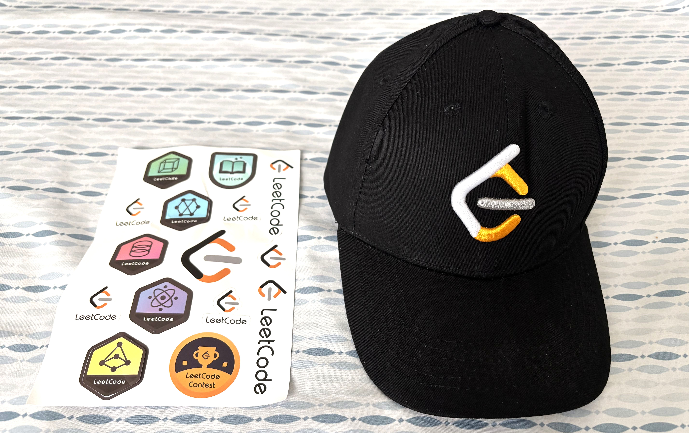

About Me
> I am a Software Engineer at Salesforce with a Master of Engineering in Computer Software Engineering from the University of Maryland, College Park, and a Bachelor of Engineering in Electronics and Communications Engineering from Vignan Institute of Technology and Science, Hyderabad, India.
> I have experience building backend systems, distributed applications, REST APIs, data pipelines, and cloud-based solutions using Java, Python, Go, C/C++, JavaScript, TypeScript, SQL, and Bash. My experience includes frameworks and technologies such as Spring, Django, React, Node.js, Kafka, Redis, AWS, Azure, and GCP, along with databases including MySQL, PostgreSQL, MongoDB, DynamoDB, and CosmosDB.
> In my previous role at the University of Maryland, I worked on production data pipelines and integrations using Python, REST APIs, MySQL, Salesforce, and AWS. I improved SQL query performance by 45%, reduced manual data entry by 80%, and optimized scheduled synchronization workflows to reduce execution time and operational effort.
> Earlier in my career at Tata Consultancy Services and Tech Mahindra, I worked on microservices, REST APIs, Kafka-based processing, Redis caching, automated testing, database optimization, and API security. Across these roles, I have focused on building reliable, scalable systems while applying Agile, Scrum, TDD, and modern engineering practices.
> Beyond my professional work, I build and contribute to projects across FinTech, developer tools, AI, education, and productivity. My projects include Graduate Market Place, MathQuest, Librarian Bot, and KeepVault. I also enjoy exploring AI-assisted software development and developer productivity, using tools such as Cursor, Claude Code, and Gemini CLI.
> I am actively involved in the developer community through technical writing, open source, mentoring, and hackathons. I have mentored students and early-career engineers through Topmate, contributed to developer communities, and share what I learn about software engineering, Go, distributed systems, AI, and building practical software.
Versatile Software Engineer: Integrating Advanced System Design and Cloud Computing Solutions.
I specialize in combining the fields of Software Engineering and System Design, using my knowledge to create stable architectures and improve cloud computing solutions.
- Country: United States (USA)
- City: San Francisco, CA, USA
- Email: tharunkumarreddy.polu@gmail.com
- Highest Degree: Master's Degree
- University: University of Maryland, College Park
- Specialization: Computer Software Engineering
I specialize in system design and cloud computing, with expertise in software development, distributed system architecture, and cloud-based solutions.
PEER MENTORSHIP FACTS
As a proactive Software Engineer at Salesforce and former Graduate Assistant at the University of Maryland, College Park, I draw from my journey of securing highly competitive opportunities, from academic assistantships to new grad roles at top tech firms. I hereby offer personalized mentorship to fellow students. Through these sessions, I share actionable insights on navigating graduate school, landing research and teaching roles, building a strong technical foundation, and preparing for high-impact careers in tech. My goal is to empower aspiring students to unlock their potential, make informed decisions, and thrive both academically and professionally.
What Mentees Say
Skills
With a skill set encompassing software engineering, system design, and cloud computing, I have experience in tackling technical challenges and delivering solutions. Skilled in Java, Python, AWS, and Kubernetes, I have developed applications, optimized system architecture, and leveraged cloud technologies for deployments. Additionally, my experience extends to microservices architecture, CI/CD pipelines, and container orchestration, enabling me to build systems. Having worked in an Agile Scrum environment, I have analytical reasoning, problem-solving, and project management skills, allowing me to deliver results and contribute to the success of any software engineering project.
Resume
I am pleased to share an overview of my professional journey, highlighting my proficiency in advanced system design and cloud computing as a versatile software engineer.
Education
Master of Engineering in Computer Software Engineering
2023 - 2024
University of Maryland, College Park, MD
- GPA: 3.8/4.0
-
Relevant Coursework: Software Engineering, Hacking of C Programs and UNIX binaries, Data Structures and Algorithms, Software Design & Implementation, Reverse Software Engineering, Fundamentals for Artificial Intelligence and Deep Learning Framework, System and Software Requirements, Software Testing & Maintenence, Cloud Security
Bachelor of Engineering in Electronics & Communication Engineering
2017 - 2021
Vignan Institute of Technology and Science, Hyderabad, India
- GPA: 8.23/10.00
-
Relevant Coursework: Computer Programming in C, Java Programming, Computer Networks, Digital Communications, Switching Theory and Logic Design, Business Economics and Financial Analysis
Achievements & Extra Curricular Activities
- 2026 | The open-source DSA Handbook for Coding Interviews crossed 500+ stars on GitHub
- 2026 | Received a trophy and goodies for successfully participating in the inaugural cohort of Salesforce's "Reverse Mentorship Lab"
- 2025 | Published LLD Handbook for Coding Interviews and received 750+ downloads
- 2025 | Published DSA Handbook for Coding Interviews and received 5500+ downloads
- 2024 | Attained 12.6K views, 6.3K reads(average) with 900+ followers and official writer for 8 publications on Medium. Check out my Medium profile
- 2024 | Solved over 500+ coding problems on Leetcode, ranked among top 12% with contest rating of 1700+. Check out my Leetcode profile
- 2023 | Achieved top 0.1% on Topmate.io, offered peer mentorship for free to over 1000 students with an average rating of 4.8/5. Check out my Topmate profile
- 2023 | Selected for a pod of 15 remote developers for MLH Prep Fellowship out of 30000+ applicants. Check out pod portfolio
- 2022 | Ranked top 50 out of 5,500 software developers in Microsoft's Power to You Coding Contest.
- 2021 | Placed in top 1% nationally(India) in TCS Digital Cadre coding challenge among over 150,000 participants.
Professional Experience
Software Engineer
June 2025 - Present
Salesforce, Inc., San Francisco, CA
Software Development Engineer(GRA-II)
Apr 2023 - May 2025
University of Maryland, College Park, MD
Software Engineering Intern
May 2024 - August 2024
Develop For Good
Software Engineering Prep Fellow
Mar 2023 - Apr 2023
Major League Hacking Inc., New York, NY (Remote)
Graduate Teaching Assistant
Jan 2023 - Apr 2023
University of Maryland, College Park, MD
-
School: Robert H. Smith School of Business, University of Maryland
Semester/Term: Spring '23
ENTS 625 - Management and Organizational Behavior in the Telecommunications Industry
BMGT 467 - Strategic Innovation and Entrepreneurship
Instructor: Dr. Clarence Wesley
Software Engineer (TCS Digital)
Dec 2021 - Dec 2022
Tata Consultancy Services Ltd.(TCS), Hyderabad, India
Assistant Software Engineer Trainee
Jul 2021 - Nov 2021
Tata Consultancy Services Ltd.(TCS), Hyderabad, India
Software Engineering Intern
Mar 2021 - Jul 2021
Tech Mahindra Ltd., Hyderabad, India
LeetCode
Problem solving is at the heart of every great engineer, and LeetCode has been my playground for sharpening that skill. Over the years, I have tackled a wide range of problems spanning data structures, algorithms, dynamic programming, graphs, and system-level design patterns, while consistently participating in weekly and biweekly contests to benchmark my progress. This ongoing practice not only keeps my fundamentals sharp but also directly translates into writing cleaner, more efficient, and more scalable code in real-world projects.

Projects
In my portfolio, you will find a diverse array of projects showcasing my expertise in software engineering, data engineering, and full-stack development. From architecting scalable microservices and designing robust backend APIs to developing interactive web applications, each project exemplifies my commitment to creating efficient, reliable, and user-friendly solutions. I leverage cutting-edge technologies and best practices to deliver high-performance systems and compelling user experiences.
blogs
In my blog, you will find a collection of articles that delve into the complexities and innovations of software engineering and large-scale distributed systems. I provide you with curated information extracted from my own experiences in the field of Software Engineering, specifically focusing on large-scale distributed systems. You'll also find content related to navigating life in the US, offering a unique blend of technical insights and personal experiences. Whether you're an experienced engineer, a curious student, or a tech enthusiast, my blogs offers a deep dive into the world of distributed systems, scalability, and system reliability, all through a lens of curiosity and continuous learning.
Avg. Views
Avg. Reads
Followers
Stories
Books
A growing shelf of books I genuinely like and recommend — the ones that shaped how I think about software engineering, system design, and continuous learning. They range from the craft of code and the arc of a career to mindset, money, and communicating ideas well.
Certifications
These certifications, coupled with my extensive experience detailed in my resume, underscore my unwavering commitment to mastering cloud technologies, software development, and system architecture. All of which demonstrate my dedication to continuous learning and professional excellence in the ever-evolving tech landscape.
Testimonials
Throughout my career, I have been honored to receive recommendations and accolades from peers, mentors, industry leaders, colleagues, and clients. These acknowledgments highlight my expertise, commitment, and significant contributions to software engineering and career development. I greatly appreciate the trust and confidence that have been placed in my abilities, and I remain dedicated to consistently achieving outstanding results in all my professional pursuits.
Contact Me
Whether you have an exciting opportunity, a challenging problem to solve, a mentorship question, or simply want to connect and exchange ideas, I would love to hear from you. I am always open to meaningful conversations around software engineering, system design, career growth, and collaboration on impactful projects. Feel free to reach out through the form below or any of my social channels, and I will get back to you as soon as I can.
Location:
California, United States of America (USA)